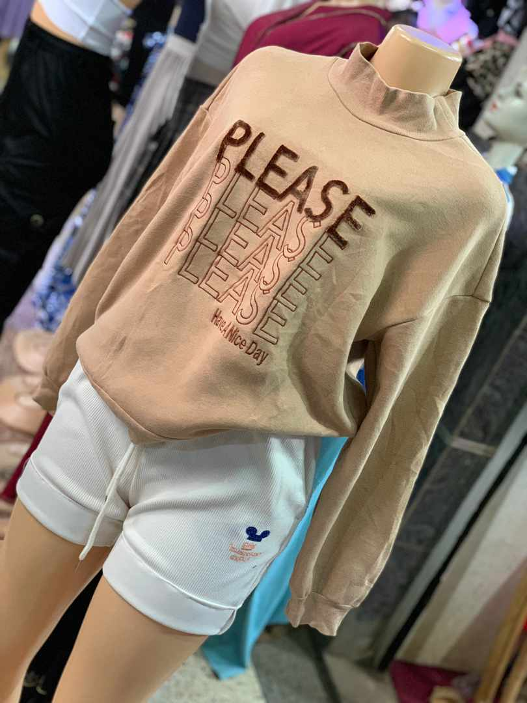
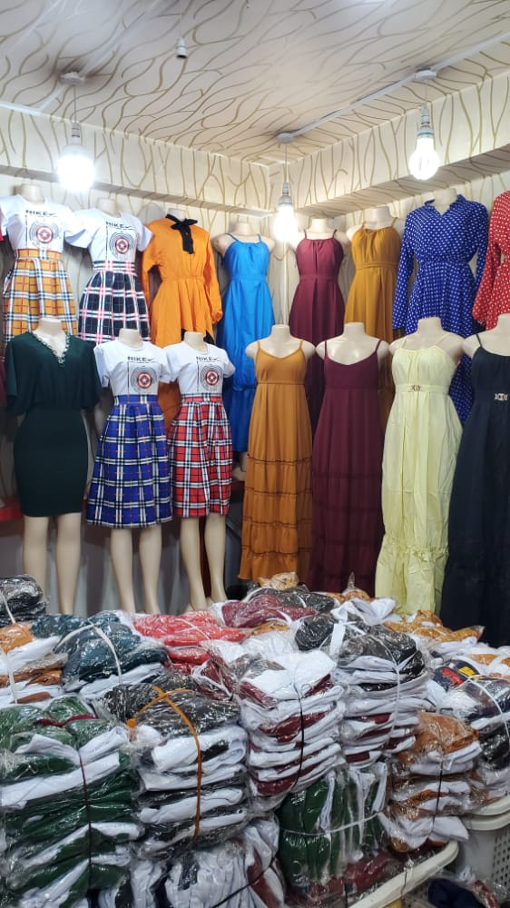
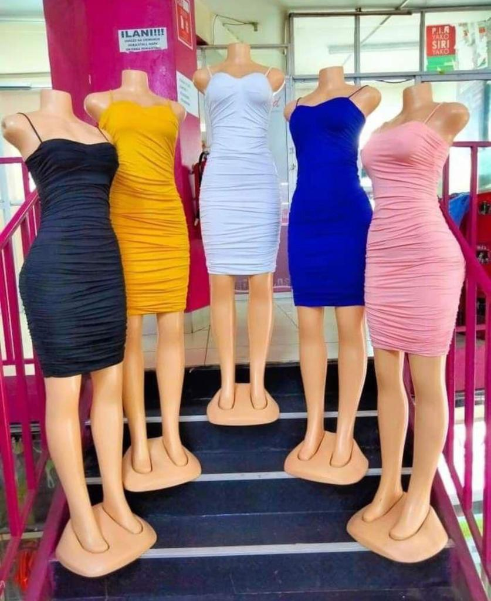
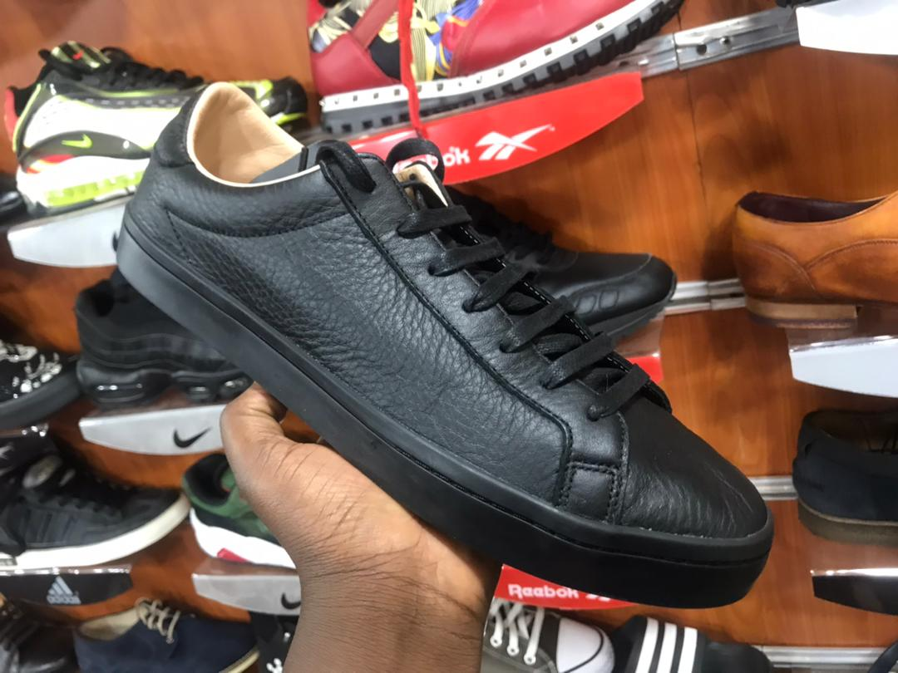
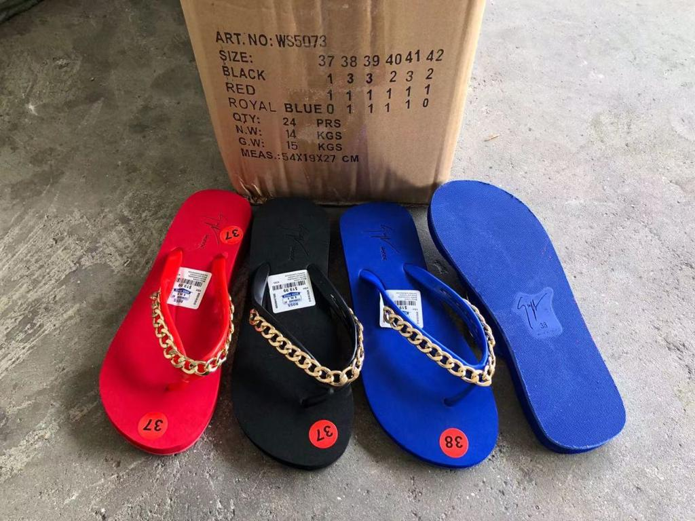
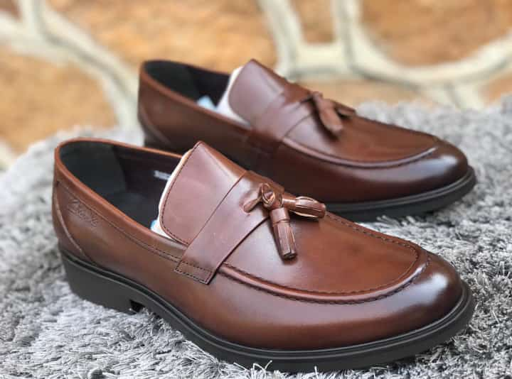

I love window shoping
Whereby window shopping is where a customers first glimpse at a product gives him or the interest to know the store has to offer.
I love this because it keeps me informed about the latest trends ,styles and tastes in the market
Especially;
|  |  |  |
|---|---|---|
|  |  |  |
The most interesting part of it is that you dont have to spend any peny till you finally get the money for the commodity in store.
Therefore you have no rush on the budget you might be having.
Then it is a stress buster,it gives you an excuse to get up ,get dressed and spend a few hours socializing.
Then trying in what your not going to purchase at that very time